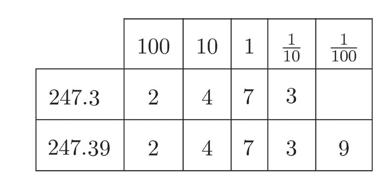

ദശാംശരൂപങ്ങൾ
ദശാംശസ്ഥാനം
പലതരം അളവുകളെ ഭിന്നമായും, അവയുടെ
ദശാംശരൂപമായും എഴുതുന്ന രീതി അഞ്ചാം
ക്ലാസിൽ കണ്ടല്ലോോ (അളവുകണക്ക് എന്ന
പാഠം).
ഉദാഹരണമായി, ഒരു പെൻസിലിന്റെ നീളം
പലതരത്തിൽ പറയാം.
•
5 സെന്റിമീറ്റർ 7 മില്ലിമീറ്റർ
•
5 10 സെന്റിമീറ്റർ
•
5.7 സെന്റിമീറ്റർ
7
ഇതുപോോലെ മറ്റ് അളവുകളെയും എഴുതാം:
5 10 ലിറ്റർ = 5.7 ലിറ്റർ
7
5 10 കിലോോഗ്രാം = 5.7 കിലോോഗ്രാം
7
അപ്പോോൾ അളവുകളെല്ലാം മാറ്റി, 5 107 എന്ന സംഖ്യയയുടെ ദശാംശരൂപമാണ് 5.7 എന്നു
പറയാം:
5 10 = 5.7
7
29
ഇതുപോോലെ 4 100
എന്ന സംഖ്യയയുടെ ദശാംശരൂപമാണ് 4.29
4 100 = 4.29
29
മറ്റൊൊരു കാര്യംം കൂടി നോോക്കാം. എണ്ണൽസംഖ്യയകൾ എഴുതുന്നത്, ഒന്നുകളുംം, പത്തു
കളുംം, നൂറുകളുമെല്ലാം ഉപയോോഗിച്ചാണല്ലോോ.
ഉദാഹരണമായി
247 = 2 നൂറുകൾ + 4 പത്തുകൾ + 7 ഒന്നുകൾ
67
Page 68
Figure fig_ch05_p068_01 (Page 68)

Figure fig_ch05_p068_02 (Page 68)
സ്റ്റാൻഡേർഡ് VI ഗണിതം
247.3 ആയാലോോ ?
ആദ്യംം പൂർണ്ണസംഖ്യയയും ഭിന്നസംഖ്യയയും ആയി ഇങ്ങനെ പിരിച്ചെഴുതാം:
3
3
247.3 = 247 10
= 247 + 10
3
ഇതിലെ 10
എന്നതിനെ ഇങ്ങനെ എഴുതാമല്ലോോ.
3 1 1 1
10 10 10 10
പൊൊതുവേ പറഞ്ഞാൽ,
ദശാംശരൂപത്തിൽ, പൂർണ്ണസംഖ്യയയെയും ഭിന്നത്തിനെയും വേർതിരിച്ചുകാണിക്കാനാ
ണ് അവയ്ക്കിടയിൽ ഒരു കുത്തിടുന്നത്. ഇതിന്റെ ഇടത്തോോട്ടുള്ള അക്കങ്ങൾ, ഒന്നിന്റെയും
പത്തിന്റെയും നൂറിന്റെയുമൊൊക്കെ ഗുണിതങ്ങളെയാണ് സൂചിപ്പിക്കുന്നത്; വലത്തോോ
ട്ടുള്ള അക്കങ്ങൾ, പത്തിലൊൊന്നിന്റെയും നൂറിലൊൊന്നിന്റെയും, ആയിരത്തിലൊൊന്നിന്റെ
യുമൊൊക്കെ ഗുണിതങ്ങളെയും.
ഉദാഹരണമായി മുകളിൽ പറഞ്ഞ രണ്ട് സംഖ്യയകളെ സ്ഥാനവിലയനുസരിച്ച് ഇങ്ങനെ പിരി
ച്ചെഴുതാം:
ചില അളവുകളുടെ ദശാംശരൂപം വീണ്ടും നോോക്കാം. ഉദാഹരണമായി, 23 മീറ്റർ, 40 സെന്റിമീറ്റർ
എന്നതിന്റെ ദശാംശരൂപമെന്താണ് ?
40
23 മീറ്റർ 40 സെന്റിമീറ്റർ = 23 100
മീറ്റർ = 23.40 മീറ്റർ
സംഖ്യയകൾ മാത്രമായി നോോക്കിയാൽ
23 100 = 23.40
40
40
ഇതിലെ 100
നെ ഇങ്ങനെയും എഴുതാമല്ലോോ ?
40 = 4
100 10
അപ്പോോൾ,
40
4
=
23=
100 23 10 23.4
അതായത്,
23.40 = 23.4
സ്ഥാനവിലയനുസരിച്ച് പിരിച്ചെഴുതിയും ഇതു കാണാം.
അതിനാൽ, 23 മീറ്റർ 40 സെന്റിമീറ്റർ എന്നതിനെ രണ്ടുതരത്തിൽ എഴുതാം.
23 മീറ്റർ 40 സെന്റിമീറ്റർ = 23.40 മീറ്റർ
23 മീറ്റർ 40 സെന്റിമീറ്റർ = 23.4 മീറ്റർ
23 മീറ്ററുംം 4 സെന്റിമീറ്ററുമായാലോോ ?
4
4
4 സെന്റിമീറ്റർ എന്നാൽ ഒരു മീറ്ററിന്റെ 100
ഭാഗമാണല്ലോോ. അതായത് 100
മീറ്റർ.
4
23 മീറ്റർ 4 സെന്റിമീറ്റർ = 23 100
മീറ്റർ.
അളവുകണക്കിൽ
23 മീറ്റർ 4 സെന്റിമീറ്റർ = 23.04 മീറ്റർ
23 മീറ്ററുംം 4 മില്ലിമീറ്ററുമാണെങ്കിലോോ ?
4
4 മില്ലിമീറ്ററെന്നാൽ 1000
മീറ്ററാണല്ലോോ.
4
23 മീറ്റർ 4 മില്ലിമീറ്റർ = 23 1000
മീറ്റർ
23 1000 എന്ന സംഖ്യയയെ സ്ഥാനവിലയനുസരിച്ച് പിരിച്ചെഴുതിയാലോോ ?
4
4
ഇതനുസരിച്ച്, 23 1000
ന്റെ ദശാംശരൂപം ഇങ്ങനെ എഴുതാമല്ലോോ ?
23 1000 = 23.004
4
അളവുകൾ എഴുതുമ്പോോൾ
23 മീറ്റർ 4 മില്ലിമീറ്റർ = 23.004 മീറ്റർ
ഇനി 4 കിലോോഗ്രാം 55 ഗ്രാമിനെ കിലോോഗ്രാമായി ദശാംശരൂപത്തിൽ എഴുതിനോോക്കൂ.
ചുവടെ കൊൊടുത്തിരിക്കുന്ന അളവുകളെയെല്ലാം ഭിന്നസംഖ്യയകൾ ഉപയോോഗിച്ചും
ദശാംശരീതിയിലും, പറഞ്ഞിരിക്കുന്ന അളവുകളിലേക്ക് മാറ്റിയെഴുതുക:
അളവ്
ഭിന്നരൂപം
ദശാംശരൂപം
4 മീറ്റർ 30 സെന്റിമീറ്റർ
4 100 മീറ്റർ
30
4.3 മീറ്റർ
4 മീറ്റർ 3 സെന്റിമീറ്റർ
... മീറ്റർ
... മീറ്റർ
4 മീറ്റർ 3 മില്ലിമീറ്റർ
... മീറ്റർ
... മീറ്റർ
3 കിലോോഗ്രാം 200 ഗ്രാം
... കിലോോഗ്രാം
... കിലോോഗ്രാം
3 കിലോോഗ്രാം 250 ഗ്രാം
... കിലോോഗ്രാം
... കിലോോഗ്രാം
3 കിലോോഗ്രാം 25 ഗ്രാം
... കിലോോഗ്രാം
... കിലോോഗ്രാം
30 കിലോോഗ്രാം 250 ഗ്രാം
... കിലോോഗ്രാം
... കിലോോഗ്രാം
10 ലിറ്റർ 750 മില്ലിലിറ്റർ
... ലിറ്റർ
... ലിറ്റർ
10 ലിറ്റർ 75 മില്ലിലിറ്റർ
... ലിറ്റർ
... ലിറ്റർ
10 ലിറ്റർ 705 മില്ലിലിറ്റർ
... ലിറ്റർ
... ലിറ്റർ
100 ലിറ്റർ 750 മില്ലിലിറ്റർ
... ലിറ്റർ
... ലിറ്റർ
71
Page 72
Figure fig_ch05_p072_01 (Page 72)
സ്റ്റാൻഡേർഡ് VI ഗണിതം
ദശാംശവും ഭിന്നവും
ദശാംശരൂപത്തിൽ പറഞ്ഞിരിക്കുന്ന പലതരം അളവുകളെ ഭിന്നമായി മാറ്റിയെഴുതുന്നത്
കണ്ടല്ലോോ.
ഉദാഹരണമായി,
3
7.3 സെന്റിമീറ്റർ = 7 10
സെന്റിമീറ്റർ
ഇത് മില്ലിമീറ്ററായും പറയാം.
1 സെന്റിമീറ്ററെന്നാൽ 10 മില്ലിമീറ്റർ; അപ്പോോൾ
7 സെന്റിമീറ്റർ = 70 മില്ലിമീറ്റർ
3
10 സെന്റിമീറ്ററോോ ?
1
3
10 കൾ 3 എണ്ണം ചേർന്നതാണല്ലോോ 10 .
1
10 സെന്റിമീറ്റർ എന്നാൽ 1 മില്ലിമീറ്റർ. അപ്പോോൾ,
3
10 സെന്റിമീറ്റർ = 3 മില്ലിമീറ്റർ
ഇനി ഇങ്ങനെ എഴുതാം:
3
7.3 സെന്റിമീറ്റർ = 7 10
സെന്റിമീറ്റർ
= 73 മില്ലിമീറ്റർ
1
ഇത് വീണ്ടും അല്പം മാറ്റാം. 73 മില്ലിമീറ്റർ എന്നാൽ 10
സെന്റിമീറ്റർ നീളങ്ങൾ 73 എണ്ണം
ചേർന്നത്
73
73 മില്ലിമീറ്റർ = 10
സെന്റിമീറ്റർ
അപ്പോോൾ എന്തുകിട്ടി ?
73
7.3 സെന്റിമീറ്റർ = 10
സെന്റിമീറ്റർ
അളവുകൾ മാറ്റി, സംഖ്യയകൾ മാത്രമായി പറഞ്ഞാൽ
73
7.3 = 10
ഇതുപോോലെ 7.31 മീറ്ററിനെ ഭിന്നസംഖ്യയയായി പറയുന്നതെങ്ങനെ ?
ആദ്യംം, അഞ്ചാംക്ലാസിൽ കണ്ടതുപോോലെ, ഇതിനെ പൂർണ്ണസംഖ്യയയും ഭിന്നസംഖ്യയയും ചേർന്ന
രൂപത്തിൽ എഴുതാം:
72
Page 73
Figure fig_ch05_p073_01 (Page 73)
ദശാംശരൂപങ്ങൾ
31
7.31 മീറ്റർ = 7 100
മീറ്റർ
1 മീറ്റർ എന്നാൽ 100 സെന്റിമീറ്റർ; അപ്പോോൾ
7 മീറ്റർ = 700 സെന്റിമീറ്റർ
1
മറിച്ച്, 100
മീറ്റർ എന്നാൽ 1 സെന്റിമീറ്റർ ആയതിനാൽ
31
100 മീറ്റർ = 31 സെന്റിമീറ്റർ
അപ്പോോൾ,
31
7.31 മീറ്റർ = 7 100
മീറ്റർ
= 731 സെന്റിമീറ്റർ
731 സെന്റിമീറ്ററിനെ തിരിച്ച് മീറ്ററിലാക്കിയാൽ
731
731 സെന്റിമീറ്റർ = 100
മീറ്റർ
അങ്ങനെ,
731
7.31 മീറ്റർ = 100
മീറ്റർ
സംഖ്യയകൾ മാത്രമായി പറഞ്ഞാൽ
731
7.31 = 100
ഇതുപോോലെ 7.319 ലിറ്ററിനെ ഭിന്നരൂപത്തിൽ എഴുതുന്നതെങ്ങനെ ?
319
7.319 ലിറ്റർ = 7 1000
ലിറ്റർ
ഇതിൽ,
7 ലിറ്റർ = 7000 മില്ലിലിറ്റർ
319
1000 ലിറ്റർ = 319 മില്ലിലിറ്റർ
ഇതിൽനിന്ന്,
7.319 ലിറ്റർ = 7319 മില്ലിലിറ്റർ
തിരിച്ച് ലിറ്ററിലാക്കിയാൽ
7319
7319 മില്ലിലിറ്റർ = 1000
ലിറ്റർ
ഇപ്പോോൾ ചെയ്ത കണക്കുകളിലെല്ലാം ദശാംശരൂപത്തിലുള്ള സംഖ്യയകളെ ഭിന്നസംഖ്യയകളായി
മാറ്റുകയാണല്ലോോ ചെയ്തത്.
73
7.3 = 10
731
7.31 = 100
7319
7.319 = 1000
ദശാംശബിന്ദുവിനുശേഷമുള്ള അക്കങ്ങളുടെ എണ്ണം കൂടുന്നതിനനുസരിച്ച്, ഭിന്നത്തിന്റെ ഛേദ
ത്തിൽ വരുന്ന മാറ്റം എന്താണ് ?
ഇതുപോോലെ 12.03 ന്റെ ഭിന്നരൂപം പറയാമോോ ?
ഭിന്നരൂപത്തിന്റെ അംശം എന്തായിരിക്കണം ?
ഛേദമോോ ?
12.03 ൽ ദശാംശബിന്ദുവിനുശേഷം എത്ര അക്കങ്ങളുണ്ട് ?
12.03 = 1203
100
1203
മറിച്ച് 1000 എന്ന ഭിന്നസംഖ്യയയുടെ ദശാംശരൂപം എന്താണ് ?
ഇതിന്റെ ഛേദം നോോക്കി, ദശാംശരൂപത്തിൽ ബിന്ദുവിനുശേഷം എത്ര അക്കങ്ങളുണ്ടാകും
എന്നു പറയാമോോ ?
1203
1000 = 1.203
(1) ചുവടെ ദശാംശരൂപത്തിൽ എഴുതിയിരിക്കുന്ന സംഖ്യയകളെ 10, 100, 1000 ഇവ ഏതെ
കൂട്ടലും കുറയ്ക്കലും
4.3 സെന്റിമീറ്റർ നീളത്തിൽ ഒരു വര വരച്ചു. പിന്നീട് അതിനെ 2.5 സെന്റിമീറ്റർ കൂടി നീട്ടി വരച്ചു.
ഇപ്പോോൾ വരയുടെ നീളം എത്ര സെന്റിമീറ്ററാണ് ?
4.3 സെന്റിമീറ്ററുംം 2.5 സെന്റിമീറ്ററുംം കൂട്ടുകയാണല്ലോോ വേണ്ടത്
പല രീതിയിൽ കൂട്ടാം.
ആദ്യംം ദശാംശരൂപത്തിനു പകരം, സെന്റിമീറ്ററുംം മില്ലിമീറ്ററുമാക്കാം:
4.3 സെന്റിമീറ്റർ = 4 സെന്റിമീറ്റർ 3 മില്ലിമീറ്റർ
2.5 സെന്റിമീറ്റർ = 2 സെന്റിമീറ്റർ 5 മില്ലിമീറ്റർ
സെന്റിമീറ്ററുംം മില്ലിമീറ്ററുംം വെവ്വേറെ കൂട്ടാം
4 സെന്റിമീറ്റർ + 2 സെന്റിമീറ്റർ = 6 സെന്റിമീറ്റർ
3 മില്ലിമീറ്റർ + 5 മില്ലിമീറ്റർ = 8 മില്ലിമീറ്റർ
വരയുടെ നീളം
6 സെന്റിമീറ്റർ 8 മില്ലിമീറ്റർ
ഇനി ഇത് ദശാംശരൂപത്തിലാക്കാം:
68
6 സെന്റിമീറ്റർ 8 മില്ലിമീറ്റർ = 10
സെന്റിമീറ്റർ
= 6.8 സെന്റിമീറ്റർ
അല്ലെങ്കിൽ, ആദ്യംം അളവുകൾ മില്ലിമീറ്റർ മാത്രമായി എഴുതാം:
4.3 സെന്റിമീറ്റർ = 43 മില്ലിമീറ്റർ
2.5 സെന്റിമീറ്റർ = 25 മില്ലിമീറ്റർ
75
Page 76
Figure fig_ch05_p076_01 (Page 76)
സ്റ്റാൻഡേർഡ് VI ഗണിതം
ഇനി 43 ഉം 25 ഉം കൂട്ടിയാൽ മതിയല്ലോോ; അതും പലതരത്തിലാകാം. ഉദാഹരണമായി,
43 + 25 = 40 + 20 + 3 + 5 = 68
അപ്പോോൾ വരയുടെ നീളം, 68 മില്ലിമീറ്റർ
ഇത് സെന്റിമീറ്ററായി, ദശാംശരൂപത്തിൽ എഴുതാം.
68 മില്ലിമീറ്റർ = 6 സെന്റിമീറ്റർ 8 മില്ലിമീറ്റർ
= 6.8 സെന്റിമീറ്റർ
ആദ്യംം അളവുകൾ മാറ്റി സംഖ്യയകളെ ഭിന്നമായി എഴുതുകയാണ് മറ്റൊൊരു രീതി.
43
4.3 = 10
25
2.5 = 10
ഈ ഭിന്നസംഖ്യയകൾ ഇങ്ങനെ കൂട്ടാം.
43 25 43 25 68
10 10
10
10
ഈ ഭിന്നസംഖ്യയയെ വീണ്ടും ദശാംശരൂപത്തിലാക്കാം:
68
10 = 6.8
വീണ്ടും അളവ് ചേർത്ത് വരയുടെ നീളം 6.8 സെന്റിമീറ്റർ എന്നു പറയാം.
4.3 സെന്റിമീറ്ററുംം 2.8 സെന്റിമീറ്ററുംം കൂട്ടണമെങ്കിലോോ ?
അളവുകൾ മില്ലിമീറ്ററിലാക്കി കൂട്ടിനോോക്കാം:
4.3 സെന്റിമീറ്റർ = 43 മില്ലിമീറ്റർ
2.8 സെന്റിമീറ്റർ = 28 മില്ലിമീറ്റർ
ഇനി 43 ഉം 28 ഉം കൂട്ടിയാൽ മതിയല്ലോോ; അത് ഇങ്ങനെയാകാം:
43 + 28 = 40 + 20 + 3 + 8 = 60 + 11 = 71
അപ്പോോൾ വരയുടെ നീളം, 71 മില്ലിമീറ്റർ.
ഇത് സെന്റിമീറ്ററായി, ദശാംശരൂപത്തിൽ എഴുതാം.
71 മില്ലിമീറ്റർ = 7 സെന്റിമീറ്റർ 1 മില്ലിമീറ്റർ
ഈ ഭിന്നസംഖ്യയയെ വീണ്ടും ദശാംശരൂപത്തിലാക്കാം:
975
100 = 9.75
അതായത്, പാത്രത്തിൽ ഇപ്പോോൾ 9.75 ലിറ്റർ എണ്ണയുണ്ട്.
ഇനി ഈ കണക്ക് നോോക്കൂ:
ഒരാൾ 2.5 കിലോോഗ്രാം അരിയും 3.125 കിലോോഗ്രാം പച്ചക്കറിയും വാങ്ങി. ആകെ എത്ര
ഭാരമായി ?
ഇതും ഭിന്നസംഖ്യയകൾ ഉപയോോഗിച്ചുചെയ്യാം:
25
2.5 = 10
3125
3.125 = 1000
25
ഇവ തമ്മിൽ കൂട്ടുന്നതിന് 10
നെയും, ഛേദം
1000 ആയ ഭിന്നസംഖ്യയയാക്കണം:
25 # 100
25
10 = 10 # 100
2500
= 1000
(1) സ്കൂൾ വാർഷികത്തിന് ക്ലാസ് അലങ്കരിക്കുവാൻ അനു 8.5 മീറ്റർ തോോരണവും സാറ
7.8 മീറ്റർ തോോരണവും ഉണ്ടാക്കി. രണ്ടുപേരുംം കൂടി എത്ര നീളത്തിൽ തോോരണ
മുണ്ടാക്കി ?
(2) അമലിന്റെ യൂണിഫോോമിന് 2.25 മീറ്റർ തുണിയും സാഗറിന് 1.85 മീറ്റർ തുണിയും
വേണം. രണ്ടുപേർക്കും കൂടി എത്ര മീറ്റർ തുണി വേണം ?
(3) ഒരു ടിന്നിന് 2.85 കിലോോഗ്രാം ഭാരമുണ്ട്. അതിൽ 12.5 കിലോോഗ്രാം അരിയുണ്ട്. ടിന്നിനും
അരിക്കും കൂടി എത്ര ഭാരമുണ്ട് ?
(4) ബകുൾ ദിവസവും രാവിലെ 2.25 കിലോോമീറ്ററുംം വൈകിട്ട് 1.5 കിലോോമീറ്ററുംം വ്യായാ
മത്തിനായി നടക്കും. ബകുൾ ദിവസവും വ്യായാമത്തിനായി എത്ര കിലോോമീറ്ററാണ്
നടക്കുന്നത് ?
(5) രണ്ട് ചെറിയ കുപ്പികളിലായി 0.850 ലിറ്റർ, 0.375 ലിറ്റർ വീതം തേനുണ്ട്. ഇത് ഒരു
വലിയ കുപ്പിയിൽ ഒഴിച്ചു. വലിയ കുപ്പിയിൽ ഇപ്പോോൾ എത്ര ലിറ്റർ തേനുണ്ട് ?
ഇനി അളവുകൾ കുറയ്ക്കേണ്ടിവരുന്ന ചില സന്ദർഭങ്ങൾ നോോക്കാം. ഈ കണക്ക് നോോക്കൂ:
8.5 സെന്റിമീറ്റർ നീളമുള്ള ഈർക്കിലിൽ നിന്ന് 3.2 സെന്റിമീറ്റർ നീളമുള്ള ഒരു കഷണം
ഒടിച്ചുകളഞ്ഞാൽ, മിച്ചമുള്ള ഈർക്കിലിന്റെ നീളമെത്രയാണ് ?
സംഖ്യയകൾ മാത്രമായി ആലോോചിച്ചാൽ, ഇവിടെ 8.5 ൽ നിന്ന് 3.2 കുറയ്ക്കുകയാണല്ലോോ വേണ്ടത്.
സംഖ്യയകളെ ഭിന്നരൂപത്തിലാക്കാം:
85
8.5 = 10
32
3.2 = 10
സ്ഥാനവിലയും കുറയ്ക്കലും
ദശാംശരൂപത്തിലുള്ള സംഖ്യയകളെ ഭിന്നരൂപ
ത്തിലാക്കാതെ തന്നെ സ്ഥാനവിലയനുസരിച്ച്
കുറയ്ക്കാം . ഉദാഹരണമായി
8.5 − 3.7
കണക്കല്പം മാറ്റി, ഇങ്ങനെയാക്കിയാലോോ ?
8.5 സെന്റിമീറ്റർ നീളമുള്ള ഈർക്കിലിൽ നിന്ന്
ചെയ്യാൻ ആദ്യംം ഇങ്ങനെ എഴുതാം :
3.7 സെന്റിമീറ്റർ നീളമുള്ള ഒരു കഷണം ഒടിച്ചു
കളഞ്ഞാൽ, മിച്ചമുള്ള ഈർക്കിലിന്റെ നീളമെത്ര
യാണ് ?
നേരത്തെ ചെയ്തതുപോോലെ, ആദ്യംം അളവുകൾ മാറ്റി 5 പത്തിലൊൊന്നുകളിൽ നിന്ന് 7 പത്തിലൊൊ
ന്നുകൾ കുറയ്ക്കാൻ കഴിയില്ലാത്തതിനാൽ ഇത്
സംഖ്യയകളെ ഭിന്നമായി എഴുതി തുടങ്ങാം:
ഇങ്ങനെ മാറ്റിയെഴുതി ചെയ്യാം :
മിച്ചമുള്ള ഈർക്കിലിന്റെ നീളം 4.8 സെന്റിമീറ്റർ.
മറ്റൊൊരു കണക്കുനോോക്കൂ:
ഒരു ചാക്കിൽ 15 കിലോോഗ്രാം അരിയുണ്ട്. ഇതിൽനിന്ന് 4.25 കിലോോഗ്രാം അരി ഒരു സഞ്ചി
യിലാക്കി. ചാക്കിൽ ഇനിയെത്ര കിലോോഗ്രാം അരി ബാക്കിയുണ്ട് ?
സംഖ്യയകൾ മാത്രമായി ആലോോചിച്ചാൽ, ഇവിടെ 15 ൽ നിന്ന് 4.25 കുറയ്ക്കണം.
4.25 നെ ഭിന്നസംഖ്യയയായി എഴുതാം:
425
4.25 = 100
15 നെ 100 ഛേദമായ ഭിന്നസംഖ്യയയായി എങ്ങനെ മാറ്റുംം ?
ഒരു ഭിന്നം പലരൂപം എന്ന പാഠത്തിലെ ഹരണക്കണക്കുകൾ എന്ന ഭാഗം ഓർത്തുനോോക്കൂ:
15 # 100 1500
15 = 15
1 = 1 # 100 = 100